-
*RRB
*UPSC
*IBPS SO
*SBI PO
*SSC CPO
*ESE
*CDS
*RBI B Officer
*SSC CHSL
*PSC
*UPSC CAPF
*IBPS Clerk
*LIC AAO
*NDA
*RBI
*AFCAT
*IBPS PO
*IBPS
*UPSC CSE
*SSC
- RRB - Railway Recruitment Board Exam
GroupD - UPSC-Civil Services Examination
- IBPS SO
- SBI PO
- SSC CPO
- ESE - Engineering Services Examination
- CDS Exam
- RBI Grade B Officer
- SSC CHSL
- State PSC Exams
- UPSC CAPF
- IBPS Clerk
- LIC AAO
- NDA
- Reserve Bank of India
- AFCAT
- IBPS PO
- Institute of Banking Personnel Selection
- UPSC CSE
- SSC Exams
RRB
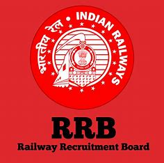
The criteria for RRB eligibility is set by the Railway Recruitment Board. The eligibility criteria for the RRB exams ensure that the best candidates are recruited for the various posts available in the Indian Railways. Candidates will be a part of the recruitment process for the RRB Exams only when they fulfil specific RRB eligibility criteria like age, nationality, educational qualification etc.
upcs
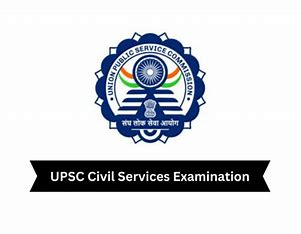
The UPSC Exam pattern is set by the conducting body, i.e., the Union Public Service Commission. It is a yearly conducted examination and the paper pattern for the IAS Exam has been the same since 2013. This article aims to give the reader an overview of the UPSC exam pattern and syllabus for CSE 2024.
IBPS SO
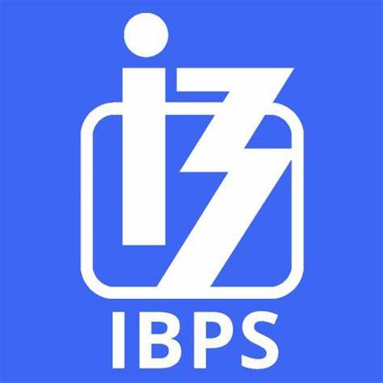
The IBPS Exam Pattern gives an overall idea about the question format, marking scheme and weightage of each topic covered. Candidates willing to apply for the upcoming IBPS exams can refer to the IBPS exam pattern given in this article. The Institute of Banking Personnel Selection conducts multiple bank exams throughout the year to recruit employees for public sector banks in urban and rural areas. Each IBPS examination has its own exam pattern and syllabus.
SBI PO
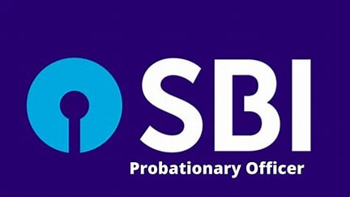
In this article, we shall discuss the complete SBI PO syllabus. Aspirants can also download the SBI PO Syllabus PDF for Prelims and Mains given here. The SBI PO exam is one of the most sought after exams in the country and lakhs of candidates appear for the exam each year. The SBI PO Exam is considered to be a coveted job opportunity by banking aspirants across India. The State Bank of India conducts the SBI Probationary Officer (PO) exam annually to recruit new entrants for managerial cadre positions.
SSC CPO
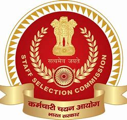
Candidates appearing for the SSC Combined Police Organization (CPO) Exam should be very particular about the latest SSC CPO Syllabus and exam pattern. Candidates should be updated on every detail related to the SSC CPO exam. SSC CPO exam is conducted by the Staff Selection Commission to recruit candidates for SI/ASI posts in Delhi Police and Central Armed police force. For more details on other SSC Exams, refer to the linked article.
ESE

The Union Public Service Commission has unveiled the UPSC ESE Syllabus 2024, which can be accessed in PDF format via its official website @upsc.gov.in. This syllabus encompasses both the Prelims and Mains Examinations of the esteemed ESE. Annually, this examination identifies candidates for positions within various Government of India departments. Engineering graduates are strongly advised to initiate their exam preparation by devising a meticulously structured study plan that aligns with the UPSC ESE Syllabus 2024 and the UPSC ESE Exam Pattern 2024
CDS
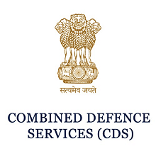
UPSC conducts CDS exam to recruit candidates for the Indian Military Academy, Indian Naval Academy, Officers Training Academy and the Indian Air Force Academy. Further information regarding the CDS exam is given in the linked page. Aspirants willing to get into the Defense Force through CDS exam must upkeep themselves with the CDS Syllabus and exam pattern. Therefore, for candidates convenience, the article aims to provide the latest CDS exam pattern as well as the detailed CDS Syllabus as prescribed by the UPSC along with the important Booklist for CDS exam.
RBI

Life with RBI is not just another career. It's a commitment. Commitment to serve the Nation, where your decisions make an impact on the way the economy and the financial sector in the country evolves. Come to RBI if you are looking for an ecosystem that encourages continuous learning, an equal opportunity work environment, a supportive HR climate and, of course, an attractive compensation structure.
SSC CHSL
SSC CHSL Eligibility – The criteria for SSC CHSL eligibility is set by the Staff Selection Commission. Candidates must fulfil the eligibility conditions set by the commission to get selected in the SSC CHSL examination. Every year the SSC (Staff Selection Commission) conducts an annual examination known as Combined Higher Secondary Level (CHSL) to recruit candidates to fill the posts of Lower Division Clerk (LDC)/ Junior Secretariat Assistant (JSA), Postal Assistant (PA)/ Sorting Assistant (SA) and Data Entry Operator (DEO). These posts will form the backbone of the various ministries and departments of the Government of India.
PSC
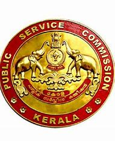
The Public Service Commissions (PSC) in India are constitutionally mandated (Articles 315 – 323) to assist the respective state governments in matters of recruitment, transfers and disciplinary actions. The Union Public Service Commission (UPSC) conducts the prestigious IAS Exam every year. The IAS Exam is the common entry point for 20-odd Group A and Group B services. Similarly, the State Public Service Commissions conduct recruitment exams which act as an entry point for coveted services in the state administration.
UPSC CAPF
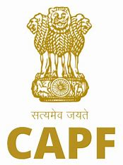
The Union Public Service Commission (UPSC) sets the CAPF syllabus and exam pattern. Knowing the syllabus and CAPF exam pattern will help candidates make a strategy for preparation in a systematic manner.
IBPS Clerk
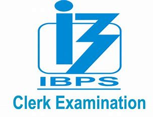
The IBPS Clerk syllabus is set as per the conventions set by the Institute of Banking Personnel Selection. The IBPS Clerk exam is conducted every year by the Institute of Banking Personnel selection to recruit clerks for Public Sector Banks.
LIC AAO
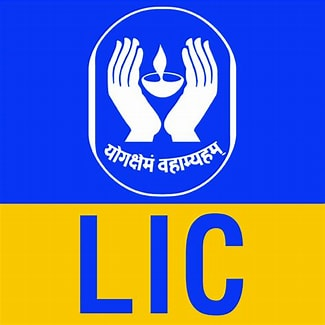
Life Insurance Corporation sets LIC AAO Syllabus. The LIC AAO exam is conducted for the recruitment of Assistant Administrative Officer. Life Insurance Corporation of India is the largest insurance company in the country. The recruitment for LIC is one of the most awaited reputed job profile in the banking and insurance sector.
NDA
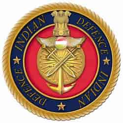
The National Defence Academy and Naval Academy Examination is an entrance examination conducted by the Union Public Service Commission (UPSC) twice a year for admissions into the National Defence Academy (NDA) and Indian Naval Academy (INA).[1] The NDA Exam serves as a gateway for candidates seeking a career in the Indian Army, Navy, and Air Force.
RBI
The Reserve Bank of India conducts examinations for recruitment to various posts in the RBI. The RBI was established in 1935 and nationalised in 1949. It is the apex bank in the country responsible for maintaining the Consolidated Fund of India and formulating banking policies.
AFCAT
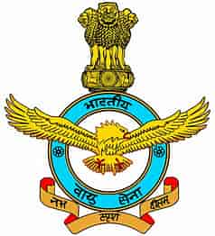
The AFCAT (Air Force Common Admission Test) is an Exam conducted by the Indian Air Force to recruit Officers in the various branches of AFCAT. The AFCAT exam is conducted twice a year by the Indian Air Force. Lakhs of candidates apply for this exam to join the most prestigious IAF and give wings to their dreams. To clear the AFCAT exam with flying colors, candidates should know the detailed Syllabus and Exam Pattern of AFCAT Exam 2024. In this article, We have provided the Latest Syllabus and Exam Pattern to help you crack AFCAT Exam with a good score.... Read more at: https://www.adda247.com/defence-jobs/afcat-syllabus/
IBPS PO
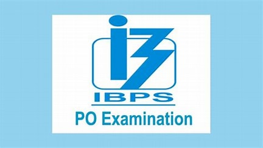
The IBPS PO Notification PDF has been released on the official website by the Institute of Banking Personnel Selection (IBPS) to fill out 4455 vacancies of PO posts. Candidates planning to appear for the IBPS PO 2024 exam which is scheduled for October 19th and 20th, 2024, should review the IBPS PO Syllabus 2024 and Exam Pattern for both the Prelims and Mains exams.... Read more at: https://www.adda247.com/jobs/ibps-po-syllabus/
IBPS

The IBPS Exam Pattern gives an overall idea about the question format, marking scheme and weightage of each topic covered. Candidates willing to apply for the upcoming IBPS exams can refer to the IBPS exam pattern given in this article. The Institute of Banking Personnel Selection conducts multiple bank exams throughout the year to recruit employees for public sector banks in urban and rural areas.
UPSC CSE
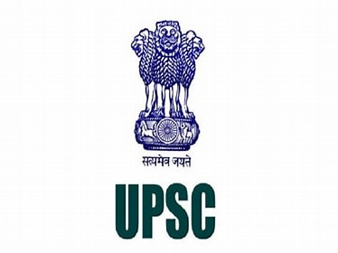
The UPSC Civil Services Examination (CSE) is a challenging journey and a dream of millions of aspirants. This examination serves as the gateway to some of the most prestigious positions in the civil services. So having a better understanding of this exam is very important. In this article, we are going to talk about exam patterns and marking scheme-related details of the UPSC Civil Services Examinations.
SSC
SSC Syllabus – The Staff Selection Commission sets the SSC exam pattern and syllabus of all the exams. The aim is to give candidates a clear idea about the Staff Selection Commission syllabus and exam pattern for all exams and provide them with SSC study materials. The SSC conducts exams annually to recruit candidates in various departments, organizations, offices under Govt. of India. The SSC Syllabus for most of the exams keeps changing at an interval of a few years. Candidates need to have updated data on the SSC Exams before going ahead with the application form filling.
Home